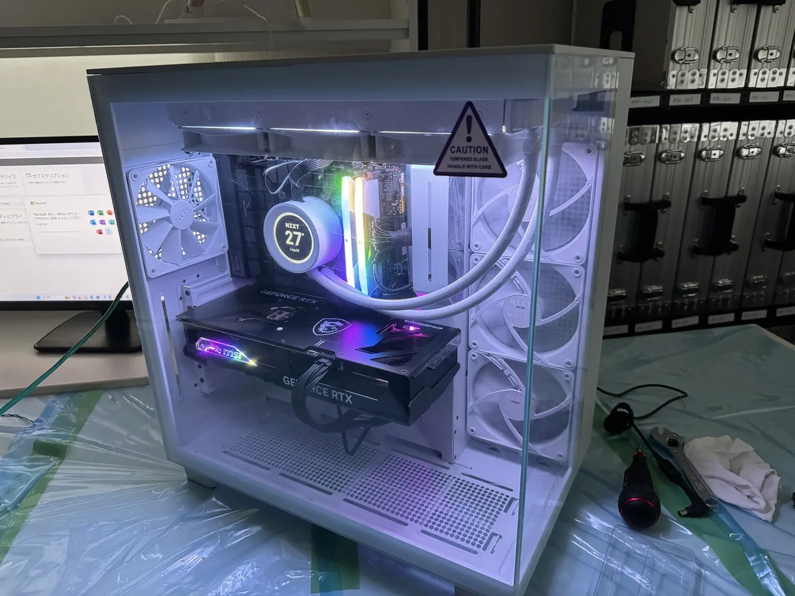
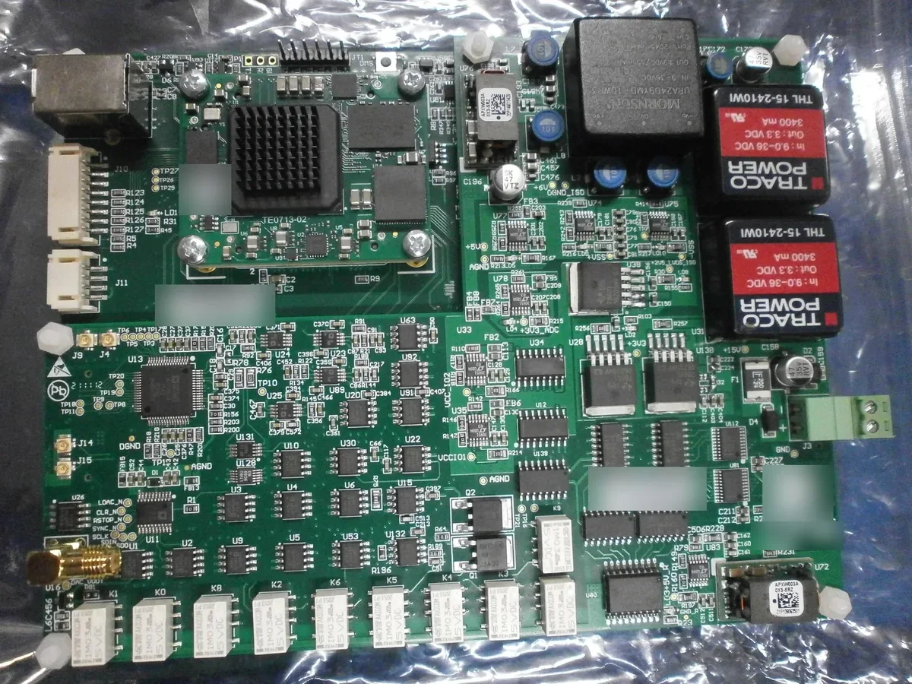

熊本県菊池郡大津町 mowaソリューションズ株式会社
AIとデジタルのmowa
パソコン・スマホの
-
受託開発
熊本県内の事業者・個人のお客様向けに、
アプリ開発・AI導入の受託開発を中心に行います。 パソコンの修理・設定と、 スマホの設定のご相談も承ります。 -
半導体テスト装置
半導体メーカー・試験会社向けに、
試験装置PEPPERと 試験用基板（BOST）を 開発・販売しています。
相談と見積もりは無料です。
- 年中無休 9:00–17:00
- 熊本県菊池郡大津町
- 096-282-8122



ITサービス
受託開発・アプリ開発・AI導入を中心に、
| サービス | 内容 | お渡しするもの | 料金の目安（仮） |
|---|---|---|---|
| 業務アプリ・ツールの開発 | 日報・在庫・予約・集計を、紙やExcelから置き換えるアプリの開発 | スマホ・PCで動くアプリ、操作説明書 | 30,000円〜 |
| AI導入支援 | 文章作成・問い合わせ対応への生成AIの導入、社内の利用ルールづくり、社内専用AI（ローカルLLM）の構築 | 設定済みの環境、利用ルールの文書 | 20,000円〜 |
| パソコンの修理・設定 | 故障診断、データの救出、メモリ・SSD・バッテリー・マザーボードの交換、LINE・メールの設定、データのバックアップ、ネットにつながらない原因の調査。スマホの設定も承ります。 | 修理済みのパソコン、作業報告書 | 5,000円〜 |
| パソコンの組み立て | 用途に合わせたパソコンの組み立て（AI用のGPU搭載PCなど） | 組み立て済みのPC、構成表 | 見積もり |
| 電子回路・基板・3Dプリント | 計測回路、表示器、治具、ケースの設計・製作（3Dプリンタ3台） | 基板・試作品、図面 | 15,000円〜 |
| 操作研修 | 実際に使う画面での少人数研修（90分程度） | 研修、手順書 | 10,000円〜 |
| 保守（月額） | 質問への回答、定期点検、小さな修正 | ― | 5,000〜25,000円／月 |
料金の詳細はITサービスの料金をご覧ください。
これまでの作業と、対応例
-
ノートPCの修理
マザーボードの交換、SSDの換装（容量アップ）、バッテリーの交換、メモリの増設。
-
パソコンの組み立て
社内でAIを動かすためのGPU搭載PC。子ども向けのパソコン組み立て講習。
-
学校向けの機器
授業で使うRaspberry Piと画面の準備。
-
業務アプリの例
紙の日報をスマホから送れるようにし、集計を表で見られるようにする。商店の在庫をその日のうちに更新できる表にする。
ITサービスの料金
相談と見積もりは無料です。
下の金額は仮の目安（税込）です。
はじめに
-
診断・ご相談
無料 仮の
料金 オンラインで30分程度、内容をうかがいます。
-
訪問
1,000円 仮の
料金 熊本県内に60分程度うかがいます。遠方はオプションの日当を加算します。
-
パソコンの修理・設定
5,000円〜 仮の
料金 故障診断、データの救出、メモリ・SSD・バッテリー・マザーボードの交換、LINE・メールの設定、データのバックアップ、ネットにつながらない原因の調査。スマホの設定も承ります。
-
パソコンの組み立て
見積もり 仮の
料金 用途に合わせたパソコンの組み立て（AI用のGPU搭載PCなど）
開発・研修
-
業務アプリ・ツールの開発
30,000円〜 仮の
料金 日報・在庫などの入力画面と集計を、紙やExcelの代わりに作ります。
-
AI導入支援
20,000円〜 仮の
料金 文章作成・問い合わせ対応へのAIの導入と、社外に出してよい情報のルールづくり。
-
電子回路・基板・3Dプリント
15,000円〜 仮の
料金 表示器、温度などの計測回路、治具。部品代は別途、事前にお知らせします。
-
操作研修
10,000円〜 仮の
料金 90分程度。人数と場所はご相談のうえ決めます。
保守プラン（月額）
保守ライトの回答は平日です。
-
ライト
5,000円 / 月 仮の
料金 メッセージでの質問に、平日に回答します。受付は年中無休です。
-
スタンダード
12,000円 / 月 仮の
料金 ライトに加えて、月1回のオンライン点検または訪問。
-
おまかせ
25,000円 / 月 仮の
料金 定期点検に加えて、小さな修正を月2時間まで行います。
オプション
半導体テスト装置
半導体メーカー・試験会社向けに、
| 製品 | 内容 | 対象 |
|---|---|---|
| PEPPER／PEPPER Mix／PEPPER Server | 半導体の試験装置（デジタル・アナログ混在）と、その制御サーバ | 半導体メーカー・試験会社 |
| 高精度DAC BOST | DACの出力を8サイト同時に高精度で測る試験用基板 | 同上 |
| MwsDebugTool | PEPPER用のデバッグソフト（ピン状態の一覧、Shmoo） | PEPPERの利用者 |
-


PEPPER。ラック、扉を閉めた筐体、モジュール基板。 試験装置
PEPPER／
PEPPER Server デジタルとアナログが混在したデバイスに対応する半導体試験装置です。
装置本体、モジュール基板、制御用のPEPPER Server、 ソフトウェアまで自社で開発しています。 -


高精度DAC BOST。部品面と裏面。 試験用基板
高精度DAC BOST
DACの出力電圧を、
8サイト同時に高精度で測定する 試験用基板（BOST）です。 測定タイミングはFPGAで同期しています。 デバイスに合わせたカスタムBOSTの 開発も承ります。
ソフトウェア
MwsDebugTool
PEPPERのテストプログラムと並行して動くWindows用のデバッグソフトです。PEPPER Serverが次の命令を待っている間にピンの状態を読み出し、不具合が配線側かプログラム側かをその場で切り分けます。

半導体テストに関するお問い合わせも、
作業の写真
パソコンの組み立て・修理、
会社概要
| 会社名 | mowaソリューションズ株式会社 |
|---|---|
| 設立 | 2015年4月16日 |
| 代表者 | 代表取締役 玉木 智和 |
| 資本金 | 8,000,000円 |
| 従業員数 | 従業員6名、役員2名（2026年11月現在） |
| 所在地 | 〒869-1217 熊本県菊池郡大津町森729-41 |
| 電話 | 096-282-8122 |
| 事業内容 | 受託開発（業務アプリ・システムの開発、AI導入支援）、パソコンの修理・設定、スマホの設定、保守 半導体テスト装置・試験用基板の開発、製造、販売 プログラミング教室の運営 |
沿革
| 2015年4月 | mowaソリューションズ株式会社を設立 |
|---|---|
| 2015年 | ものづくり補助金 交付決定 「半導体試験装置の |
| 2018年 | 経営革新計画 承認 「高付加価値 |
| 2020年 | ものづくり補助金 交付決定 「半導体試験装置の |
| 2026年 | ものづくり補助金 交付決定 「次世代パワー半導体向け |
代表あいさつ
代表取締役の玉木です。
地域の事業者向けには、
-
受託開発
業務アプリ・システムの開発、
AI導入の支援、 パソコンの修理・設定、 スマホの設定、 パソコンの組み立て、 保守。 -
半導体テスト装置
試験装置PEPPER、
試験用基板（BOST）、 デバッグソフトの開発・販売。 -
電子回路・3Dプリント
基板の設計・製作。
3Dプリンタ3台で 治具やケースを製作します。 -
プログラミング教室
子ども向けの教室を運営しています
（mowaschool.com、別サイト）。
ご依頼の流れ
ITサービスのご依頼の流れです。
-
ご連絡
フォーム・メール・電話でご連絡ください。内容は簡単で構いません。
-
ヒアリング
オンラインまたは訪問で、現在の状況とご要望をうかがいます（無料。訪問は熊本県内1,000円）。
-
見積もり
作業内容・対象外の作業・金額を書面でお出しします。見積もりは無料です。
-
作業
ご承認後に着手します。内容を変更するときは、事前にご相談します。
-
納品・確認
完成したものを一緒に操作して確認し、説明書をお渡しします。
-
保守
必要な場合は月額の保守で継続して対応します。
よくある質問
パソコンに詳しくなくても依頼できますか。
はい。専門用語はできるだけ使わずにご説明します。
対応エリアはどこですか。
熊本県内を中心に訪問します。県外はオンラインで対応するか、交通費と日当をいただいて訪問します。
新しい機器の購入をすすめられますか。
今の機器で対応できる場合は、購入をおすすめしません。買い替えが必要なときは理由をご説明します。
料金はいくらですか。
相談と見積もりは無料です。このページの金額は仮の目安で、作業前に正式な見積もりをお出しします。請求書を発行します。
AIに顧客情報や帳簿を送ることになりますか。
AIに渡してよい情報を事前に決め、それ以外は送らない設定にします。社外に出したくない場合は、社内専用のAI（ローカルLLM）も構築できます。
納品後のサポートはありますか。
月額の保守プランがあります。単発のご依頼も承ります。
基板や3Dプリントだけの依頼もできますか。
はい。治具、ケース、小さな基板だけでも承ります。
半導体テスト装置の問い合わせもここからできますか。
はい。このページのフォームまたはお電話でご連絡ください。製品の詳細は amstester.com（別サイト）にもあります。
プログラミング教室とは別ですか。
同じ会社が運営していますが、教室は子ども向けで、このページのサービスとは別です。教室のサイトは mowaschool.com（別サイト）です。
お問い合わせ
受託開発・アプリ開発も、
- 名前
- AIとデジタルのmowa
- 運営
- mowaソリューションズ株式会社
- サービス
- パソコン・スマホの
困りごとから、 アプリ開発まで - 代表
- 代表取締役 玉木 智和
- 電話
- 096-282-8122
- 住所
- 〒869-1217
熊本県菊池郡大津町森729-41 - 受付
- メール・SNSは
24時間365日
事務所は年中無休 9:00〜17:00 - エリア
- ITサービス：熊本県
（オンライン対応可）
メールは